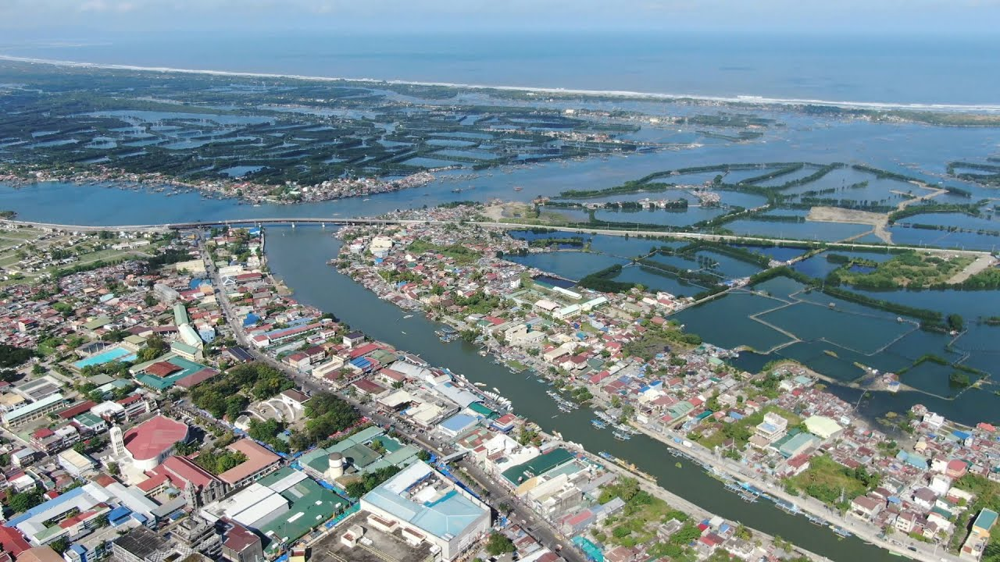

What is Dagupan City?
Dagupan, officially known as the City of Dagupan (Pangasinan: Siyudad na Dagupan, Ilocano: Siudad ti Dagupan, Tagalog: Lungsod ng Dagupan), is a 2nd class independent component city in the Ilocos Region, Philippines. According to the 2020 census, it has a population of 174,302 people. Located on the Lingayen Gulf on the northwest-central part of the island of Luzon, Dagupan is a major commercial and financial center north of Manila. Also, the city is one of the centers of modern medical services, media and communication in North-Central Luzon. The city is situated within the fertile Agno River Valley. Milkfish or locally known as Bangus The city is among the top producers of milkfish (locally known as bangus) in the province. From 2001 to 2003, Dagupan's milkfish production totaled to 35,560.1 metric tons (MT), contributing 16.8 percent to the total provincial production. Of its total production in the past three years, 78.5 percent grew in fish pens/cages while the rest grew in brackish water fishponds. Dagupan is administratively and politically independent from the provincial government of Pangasinan and is only represented by the province's legislative district. Dagupan City is one of the proposed metropolitan area in the Philippines. Metro Dagupan is proposed to include the independent component city of Dagupan, as well as the towns of Binmaley, Calasiao, Lingayen, Manaoag, Mangaldan, Mapandan, San Fabian, San Jacinto, and Santa Barbara.
